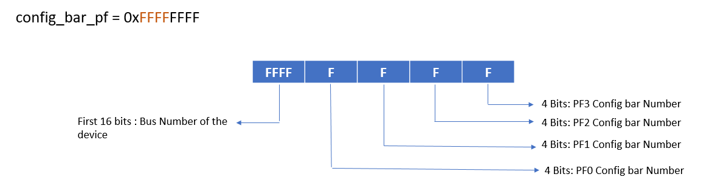

Building and Installing Software Stack¶
For building the Linux QDMA Driver, make sure the system requirements mentioned in System Requirements are satisfied.
Update the PCIe device ID¶
During the PCIe DMA IP customization in Vivado you can specify a PCIe Device ID. This Device ID must be recognized by the driver in order to properly recognize the PCIe QDMA device. The current driver is designed to recognize the PCIe Device IDs that get generated with the PCIe example design when this value has not been modified. If the PCIe Device ID is modified during IP customization, one needs to modify QDMA PMD to recognize this new ID.
User can also remove PCIe Device IDs that will not be used by the end solution.
To modify the PCIe Device ID in the driver you should open the drv/pci_ids.h file from the driver source and search for the pcie_device_id struct.
This struct identifies the PCIe Device IDs that are recognized by the driver in the following format:
{PCI_DEVICE (0x10ee, 0x9034),},
Add, remove, or modify the PCIe Device IDs in this struct as desired for your application. The PCIe DMA driver will only recognize device IDs identified in this struct as PCIe QDMA devices. Once modified, the driver must be un installed and recompiled.
Building the QDMA Driver Software¶
This driver software supports both Physical Functions (PF) and Virtual Functions (VF).
In order to compile the Xilinx QDMA software, configured and compiled Linux kernel source tree is required.
Linux QDMA driver is dependent on libaio. Hence, make sure to install libaio before compiling the QDMA driver.
Example command is provided on Ubuntu. Follow the similar procedure for other OS flavors.
[xilinx@]# sudo apt-get install libaio libaio-devel
The source tree may contain only header files, or a complete tree. The source tree needs to be configured and the header files need to be compiled. The Linux kernel must be configured to use modules.
Linux QDMA Driver software database structure and its contents can be found on the Xilinx github https://github.com/Xilinx/dma_ip_drivers/tree/master/QDMA/linux-kernel
| Directory | Description |
|---|---|
| docs/ | Documentation for the Xilinx QDMA Linux Driver |
| drv/ | Provides the interfaces to manage the PCIe device and exposes character driver interface to perform QDMA transfers |
| libqdma/ | QDMA library to configure and control the QDMA IP |
| scripts/ | Sample scripts for perform DMA operations |
| user/ | User space application to configure and control QDMA |
| tools/ | Tools to perform DMA operations |
| Makefile | Make file to compile the driver |
| RELEASE.txt | Release Notes |
Once driver sources are downloaded, compile the QDMA Driver software
[xilinx@]# make clean && make
Upon executing make, A sub-directory build/ will be created in linux-kernel with the list of executable listed in below tables.
Individual executables can also be built with commands listed against each component in below tables.
Kernel modules:
| Executable | Description | Command |
|---|---|---|
| qdma.ko | PF Driver | make pf |
| qdma_vf.ko | VF Driver | make vf |
Applications:
| Executable | Description | Command |
|---|---|---|
| dmactl | QDMA control and configuration application | make user |
| dma_to_device | Performs a host-to-card transaction for MM or ST | make tools |
| dma_from_device | Performs a card-to-host transaction for MM or ST | make tools |
| dmaperf | Measures the performance of QDMA IP | make tools |
Install the executable by running “make install”
- The QDMA module will be installed in
/lib/modules/<linux_kernel_version>/updates/kernel/drivers/qdmadirectory. - The
dmactl,dma_from_deviceanddma_to_devicetools will be installed in/user/local/sbin. - Individual components can be installed by using the appropriate install target. Ex: “make install-user” will install all user applications
- PF/VF kernel modules are generated in
buildand can be individually loaded as below
[xilinx@]# insmod build/qdma.ko
[xilinx@]# insmod build/qdma_vf.ko
QDMA Driver Module Parameters¶
Before loading the QDMA driver, make sure that an intended board is connected to the Host System and required bit stream is loaded on to the board.
QDMA driver supports the following list of module parameters.
1. Mode¶
mode module parameter is used to enable the qdma driver functionality in different modes.
Kernel module cane be loaded in following different modes
Auto Mode
Driver decides to process the request in poll or interrupt mode
Poll Mode
Driver process the requests using timer
Direct Interrupt Mode
Driver processes the requests using interrupts where each queue is assigned to a single vector
Interrupt Aggregation Mode or Indirect Interrupt Mode
Driver processes the requests using interrupts where all the queues corresponds to a function are assigned to a single vector. This vector is associated with a ring which holds the queue requests and upon receiving the interrupts, driver processes all the pending requests in the ring.
Legacy Interrupt Mode
Driver processes the requests using legacy interrupts
By default, drivers are loaded in auto mode. To load the driver is other modes, use the mode module parameter in the following format.
mode takes the input as an array of 32 bit numbers and enables the user to mention the mode for multiple devices connected to the host system. ex: 0x000Aabcd, 0x000Aabcd, 0x000Aabcd
Each 32bit number is divided as below for PF driver.

Use the below command to load the PF driver in required mode.
[xilinx@]# insmod qdma.ko mode=0x<device_bus_number><PF0_mode><PF1_mode><PF2_mode><PF3_mode>
Each 32bit number is divided as below for VF driver where all VFs corresponding to PF0 are named as VFG0, all VFs corresponding to PF1 are named as VFG1 and so on…

Use the below command to load the VF driver in required mode.
[xilinx@]# insmod qdma_vf.ko mode=0x<device_bus_number><VFG0_mode><VFG1_mode><VFG2_mode><VFG3_mode>
Refer to the example below:
[xilinx@]# lspci | grep Xilinx
01:00.1 Memory controller: Xilinx Corporation Device 913f
To load the PF driver with all PFs are in poll mode, use the below command.
Ex: insmod qdma.ko mode=0x011111
To load the PF driver with all PFs are in Interrupt Aggregation Mode, use the below command.
Ex: insmod qdma.ko mode=0x013333
To load the PF driver with PF0 in Auto mode, PF1 in poll mode, PF2 in Direct Interrupt mode and PF3 in Interrupt Aggregation Mode, use the below command.
Ex: insmod qdma.ko mode=0x010123
When multiple devices are inserted in the same host system and mode needs to be updated for each device, use the command as below.
[xilinx@]# lspci | grep Xilinx
01:00.1 Memory controller: Xilinx Corporation Device 913f
02:00.1 Memory controller: Xilinx Corporation Device 913f
Ex: insmod qdma.ko mode=0x011111,0x023333
Follow the same for VF driver by appropriately choosing each VFG mode.
2. Master PF¶
master_pf module parameter is used to set the master pf for qdma driver
By default, master_pf is set to PF0(First device in the PF list)
master_pf takes the input as an array of 32 bit numbers and enables the user to mention the master_pf for multiple devices connected to the host system. ex: 0x000Aabcd, 0x000A000B, 0x000A000B
Each 32bit number is divided as below for PF driver.

[xilinx@]# insmod qdma.ko master_pf=<device_bus_number><device_master_pf_number>
[xilinx@]# lspci | grep Xilinx
01:00.1 Memory controller: Xilinx Corporation Device 913f
Ex: insmod qdma.ko master_pf=0x010001
To set any other PF as master_pf, use the module parameter as below
Ex: insmod qdma.ko master_pf=0x010003
When multiple devices are inserted in the same host system and master_pf needs to be updated for each device, use the command as below.
[xilinx@]# lspci | grep Xilinx
01:00.1 Memory controller: Xilinx Corporation Device 913f
02:00.1 Memory controller: Xilinx Corporation Device 913f
Ex: insmod qdma.ko master_pf=0x010001, 0x020001
3. Dynamic Config Bar¶
config_bar module parameter is used to set the DMA bar of the QDMA device.
QDMA IP supports to dynamically change the DMA bar while creating the bit stream.
For 64-bit bars, DMA bar can resides in 0|2|4 bars. By default the DMA bar is configured in bar#0 and QDMA driver also assumes the default DMA bar number as 0.
If the DMA bar is configured to be in bar#2 or bar#4, pass the config_bar as a module number by mentioning the updated bar number
config_bar takes the input as an array of 32 bit numbers and enables the user to mention the config_bar for multiple devices connected to the host system. ex: 0x000Aabcd, 0x000Aabcd, 0x000Aabcd
Each 32bit number is divided as below for PF driver.
Each 32bit number is divided as below for VF driver.

Ex: Lets assume the host system has a single device connected and PF0 has config_bar in bar#2, PF1 has the config_bar in bar#0, PF2 has the config_bar in bar#4 and PF3 has the config_bar in bar#0
[xilinx@]# lspci | grep Xilinx
01:00.1 Memory controller: Xilinx Corporation Device 913f
[xilinx@]# insmod qdma.ko config_bar=0x00012040
When multiple devices are inserted in the same host system and config_bar needs to be updated for each device, use the command as below.
[xilinx@]# lspci | grep Xilinx
01:00.1 Memory controller: Xilinx Corporation Device 913f
02:00.1 Memory controller: Xilinx Corporation Device 913f
Ex: Lets assume the host system has two devices connected
- device#1 : PF0 has config_bar in bar#2, PF1 has the config_bar in bar#0, PF2 has the config_bar in bar#4 and PF3 has the config_bar in bar#0
- device#2 : PF0 has config_bar in bar#4, PF1 has the config_bar in bar#2, PF2 has the config_bar in bar#0 and PF3 has the config_bar in bar#2
Ex: insmod qdma.ko config_bar=0x00012040,0x00024202
4. Enable Traffic Manager¶
tm_mode_en parameter is used to enable Traffic Manager mode in driver to test descriptor bypass functionality with Traffic Manager example design for ST H2C queue.
By default, tm_mode_en is set to 0.
To load driver with Traffic Manager mode enabled, use below command:
Ex. insmod qdma,ko tm_mode_en=1
NOTE: This parameter is experimental and should only be used only with Traffic Manager example design.
5. Custom Defined Header¶
tm_one_cdh_en is used to test 1 CDH (Custom Defined Header) functionality with Traffic Manager example design when driver is loaded with tm_mode_en set to 1.
By default, tm_one_cdh_en is set to 0 indicating that driver will send packets with Zero CDH.
To load driver with 1 CDH enabled, use below command:
Ex. insmod qdma.ko tm_mode_en=1 tm_one_cdh_en=1
NOTE: This parameter is experimental and should only be used only with Traffic Manager example design.